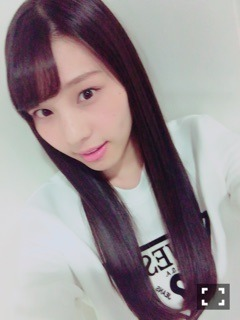

| 2016/10 21 Fri | 一大決心をしたのである！_(．．*)vol.131 |
みなさんこんにちわー！
相楽伊織です！
書きたい事が沢山あるのですが。。
まずは16枚目の詳細が昨日発表され、
｢真夏さんリスペクト軍団｣で
ユニット曲を頂けましたーーヾ(＠⌒ー⌒＠)ノ
歓喜ヾ(＠⌒ー⌒＠)ノ
ありがたや～ヾ(＠⌒ー⌒＠)ノ
本当に本当に嬉しかったです！
私は今までユニットを組んだ事がなくて
2期生の曲もあるけど
ユニットという感じでは無かったし、、
なので初ユニットが
真夏さんリスペクト軍団で
歌うことが出来て本当に嬉しいです♡！
しかもMVも撮っていただいて♡！
こうして曲を頂けたのも、
皆さんの応援のおかげだし
真夏さんのお陰でもあるし
秋元先生にも感謝していますし、
もう関わって下さった全ての方に
感謝しています！！
早く聴いてもらいたいヾ(＠⌒ー⌒＠)ノ
楽しみにしていて下さい♪♪
それから16枚目は
奈々未さんがセンターです！
奈々未さんのためにも
乃木坂46のためにも
この期間も全力で頑張ります＞＜！
奈々未さんと作る最後のシングル
素敵な思い出でいっぱいになる
お手伝いが出来たら嬉しいな、
と思うけど、
そんな余裕もない気もするので、
とにかく頑張るよー

それからそれから
先日｢墓場、女子高生｣を観に行ってきました！
会場全体が
一つの世界になってたと言うか
難しいんだけど、
みんなの演技に圧倒されました！
涙が出そうになったシーンも
沢山あって
でも笑えるシーンもあって
話の展開がスムーズで
観ていてとても楽しかったです♪♪
最後まで頑張って下さい＞＜！
 乃木坂46 16枚目シングル
乃木坂46 16枚目シングル
｢サヨナラの意味｣ 11/9 発売
楽天SHOWTIME 乃木坂ゴルフ倶楽部
月刊エンタメ 発売中
(真夏さんリスペクト軍団)
Top Yell 発売中
(花奈さん)
Samurai ELO 10/24 発売
？？？
i o r i .

コメント(252)
2016/10/21 13:24